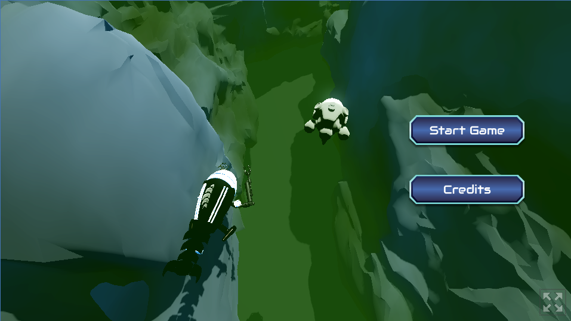

Veekos:
HardwareVeekos is a 21-key wireless Bluetooth Macropad that uses the XIAO nRF52840 Sense as its microcontroller chip. Each key has its own diode assigned; The diodes are 1N4148.

Block of Light:
HardwareThis is an IRL Minecraft Lantern which was created in KiCad 9.0 and Fusion 360.

StreamForge:
HardwareThis is my keyboard design which i made from scratch in KiCad and Fusion 360.

ESP-BLJ:
HardwareThis is a bluetooth jammer made using ESP32 and two NRF24L01 modules, which can generate a 2.4GHz spectrum signal, that could be used to interrupt Bluetooth communications temporarily.

Depth-Rush:
SoftwareA fast paced underwater arcade racer built for the browser. Avoid obstacles, navigate tight trenches, and set the fastest time possible.
